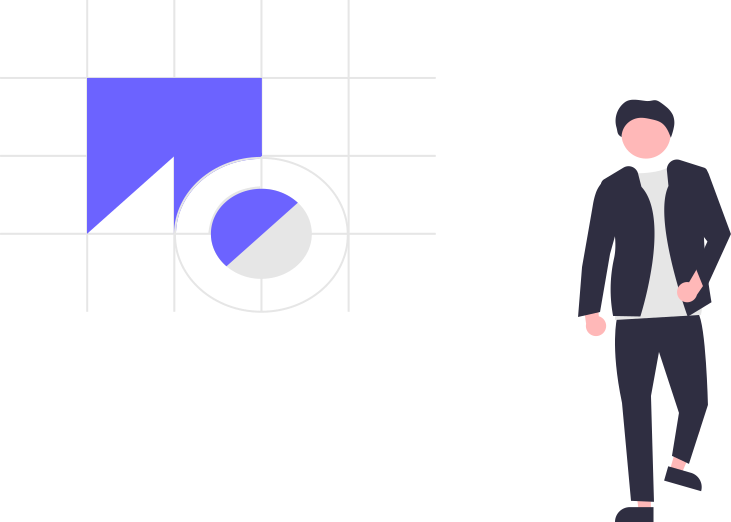

This page shares my best articles to read on topics like health, happiness, creativity, productivity and more. The central question that drives my work is, “How can we live better?” To answer that question, I like to write about science-based ways to solve practical problems.
You’ll find interesting articles to read on topics like how to stop procrastinating as well as personal recommendations like my list of the best books to read and my minimalist travel guide. Ready to dive in? You can use the categories below to browse my best articles.